Ushbu maydon shaharning diqqatga sazovor muhim joylaridan biri bo‘lib, qadimiy, ammo hamisha navqiron shaharsozlik ansambli sifatida butun dunyoga dongi ketgan. Uni uchta qudratli maqbara binosi qurshab olgan bo‘lib, har biri alohida noyob bezak bilan pardozlangan. Sharq me’morchiligining ajoyib namunasi sifatida Samarqand YuNESKOning Butunjahon merosi ro‘yxatiga kiritilgan.
Go‘ri Amir tarixiy yodgorligi XV asr boshlarida qurilgan bo‘lib, o‘zbek me’morchilik san’atining buyuk ijodiy namunasi hisoblanadi. Muqaddam madrasa shahardagi mashhur ziyoli arboblarning farzandlariga ta’lim-tarbiya beruvchi ilm maskani sifatida qurilgan. Uning ro‘parasida maxsus xonaqoh qad rostlagan Bino qurilishi Muhammad Sulton tomonidan boshlangan bo‘lib, u Islom ta’lim markazi ochishni ko‘zlagan edi.
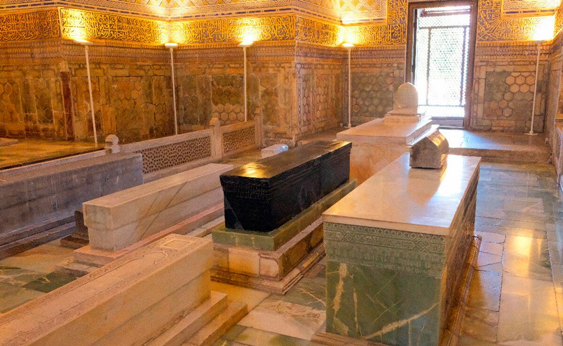Amir Temur hajmi va chiroyi jihatidan sayyoramizdagi boshqa obidalardan ustun turgan go‘zal maqbarani qurib, ayoliga sovg‘a qilgan. Jilvakor devorlari, inshootning baland qurilgan elementlari, marmar toshdan kesib ishlangan bino kubbasi Amir Temur va uning ayoli nomlarini tarixda muhrlash uchun xizmat qilishi kerakligi nazarda tutilgan emish.
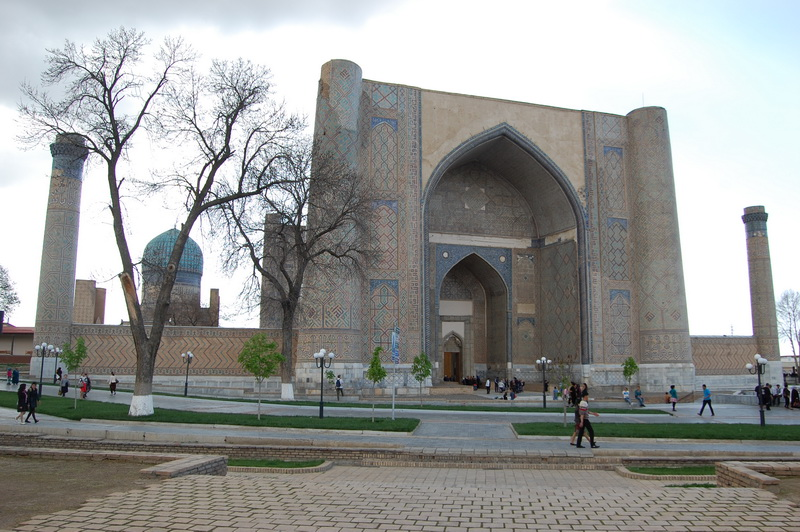Afrosiyob yirik arxeologik yodgorlik bo‘lib, qadim Samarqand shahri tarixidan darak beradi. Qadim shaharning maydoni 219 gektarni tashkil qiladi. Arxeologlar bir-birini bosib turgan 11 ta madaniy qatlamlar borligini aniqlaganlar. Shaharning zamonaviy relefida qudratli qal’aning xarobalari, ko‘hna mudofaa devorlari, qachonlardir shaharga suv keladigan kanalning vayronalarini oson ajrata olish mumkin.
Shohi Zinda maqbarasi Samarqand shahridagi rang-barang qabr toshlarni o‘zida mujassam etgan qadimiy osori-atiqalardan biri bo‘lsa ne ajab. Ushbu tarixiy obidaning o‘ziga xos jihati shundaki, u XIV-XV asrlar mobaynida qurilgan barcha inshootlarni o‘zaro chambarchas uyg‘unlashtirgan. Mazkur binolar qadimgi Afrosiyob shahrining yaqinida qad rostlagan bo‘lib, bino joylashgan ko‘chani “qabriston ko‘chasi”, deb ham atashgan.
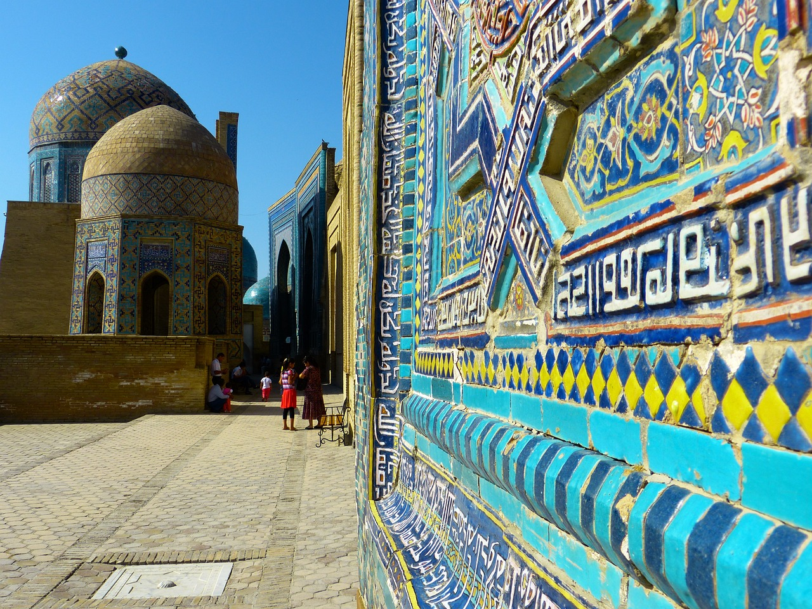Ulug‘bek – asl ismi Muhammad Tarag‘ay buyuk o‘zbek astronomi va matematigi, davlat arbobi, Temurning nabirasidir. U. O‘rta Osiyo xalqlari ilm-fani va madaniyatini o‘rta asr sharoitida dunyo fanining oldingi safiga olib chiqqan olimlardan biri. Movarounnahrda Ulug‘bekning homiylik davrida (1409–1449) Samarqand yanada gullab–yashnadi: hunarmandlik, me’morlik, adabiyot ravnaq topdi, ilm-fan yuksaldi, savdo rivojlandi. Ulug‘bekdan jahon fani va madaniyati rivojiga muhim hissa bo‘lib qo‘shilgan katta ilmiy va madaniy meros qolgan. Shulardan biri Ulug‘bek rasadxonasidir. Samarqanddagi XV asr me’morligining nodir namunalaridan biridir. Bino Ulug‘bek farmoni bilan 1424–1429 yillari Ko‘hak (Cho‘pon ota) tepaligida, Obirahmat arig‘i bo‘yida bunyod etilgan.
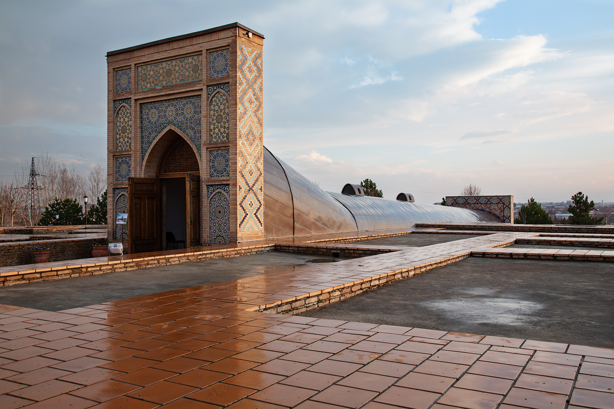Keyingi kezlarda Samarqand viloyatining Nurobod tumani, Oqsoy qishlog‘i hududida joylashgan Hazrati Dovud g‘ori O‘zbekistondagi eng sergavjum ziyoratgohlardan biriga aylangan. Mazkur g‘or o‘zida o‘ta qadimiy va turli-tuman rivoyatlarni yashirgan bo‘lib, unga tashrif buyuruvchilar soni kun sayin tobora ortib bormoqda. Tog‘ cho‘qqisidagi tik qoyada joylashgan g‘orga kirgan ziyoratchilar Temir piri sanalgan Hazrati Dovud haqqiga tilovat o‘qib, niyat qiladilar.
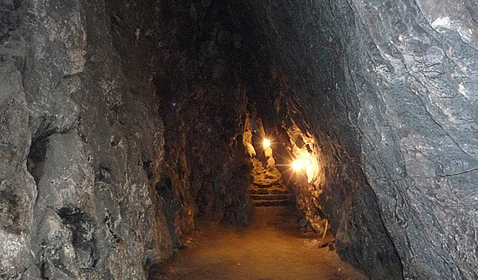Samarqand shahrining Afrosiyob qadimiy shaharchasi muhofaza devori tagidan oqib o‘tadigan Siyob arig‘i yoqasida Samarqand ahli tomonidan asrlar davomida qadr-qiymatlanib kelinayotgan Doniyor Paygambar maqbarasi eng mo‘’tabar ziyoratgohlardan biridir. Samarqandliklar ushbu ziyoratgohni ba’zan Doniyor Payg‘ambar, Xoja Doniyor va Hazrati Doniyor ziyoratgohi, deb ataydilar. Doniyor Paygambar Dovud alayxissalom avlodidan bo‘lib, eramizdan oldin 603 yilda Kuddus shahrida dunyoga kelgan. Bobil davlati podshosi Navuxudonosor tomonidan eramizdan oldingi 586 yilda bu muborak shahar zabt etiladi va ko‘p odamlar asirga olib ketiladi. Ular orasida 17 yoshlik Doniyor ham bor edi..
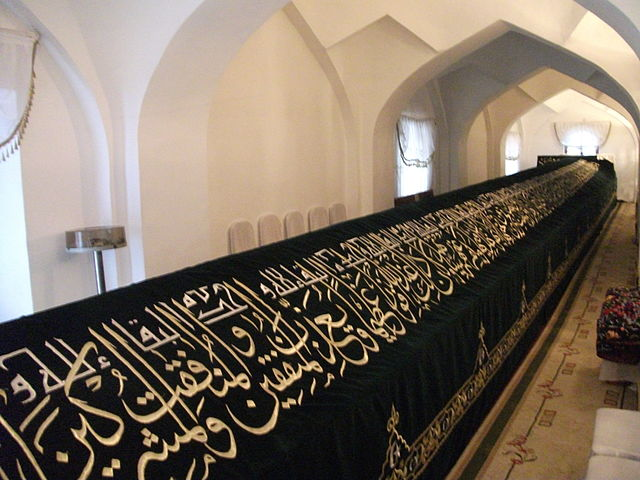Imom al-Buxoriyning nomi butun Sharq olamida mashhur bo‘lib, u eng buyuk xudojo‘ylarning biridir. Uning Hadislar to‘plamida Payg‘ambarimiz alayhivassalamning aytganlari va hayotliklaridagi u bilan bog‘liq hikmatlarga boy voqea-hodisalarga doir 600 000 dan ziyod qo‘lyozmalar qoldirgan. Imom al-Buxoriy azaldan ilm fan va madaniyat ravnaqida mashhur ulamo bo‘lib, muhaddislarning imomi, Hadis ilmining sultoni hisoblangan.
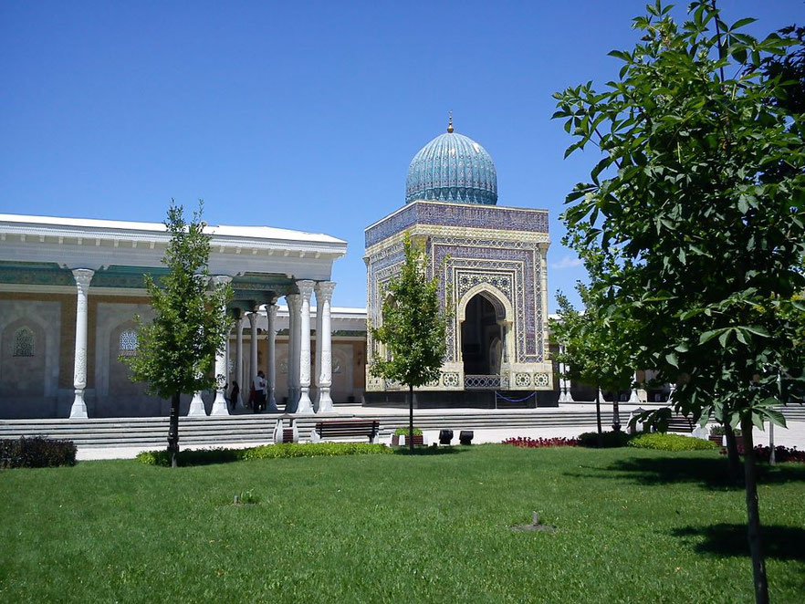Siyob bozori nafaqat Samarqand shahri, balki O‘zbekiston va Markaziy Osiyoning eng qadimiy va yirik bozori hisoblanadi. Bozorning hududi 7 gektarni tashkil etadi. Siyob bozori sayyohlar eng ko‘p tashrif buyuradigan joylardan biridir. Uning nomi shaharning tarixiy-geografik tumanlaridan biri - Siyob, shuningdek, bozor yaqinidan oqib o‘tuvchi Siyob daryosi nomiga qo‘yilgan. «Siyob» so‘zi fors-tojikchadan tarjima qilinsa «siyoh ob» - «qora suv/daryo» ma’nosini beradi.
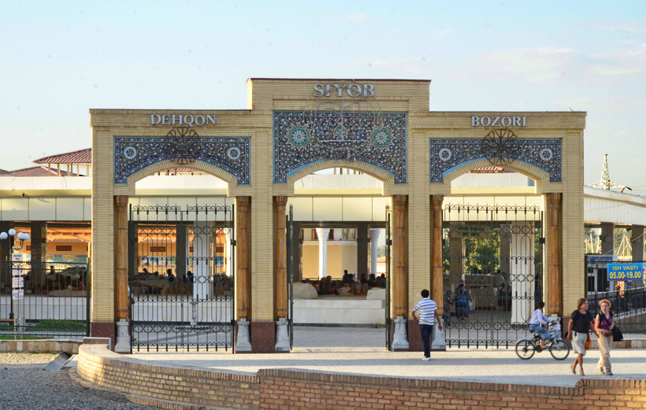Buxoro oʻrta asrning 140 dan ortiq arxitektura yodgorliklarini oʻzida saqlagan "Muzey shahar“ deb tan olingan.
Asrlar avval qurilgan Poi Kalon, Qoʻsh Madrasa, Somoniylar maqbarasi, minorai kalon kabi yodgorliklar bugungi kungacha ham barchaning diqqat markazida bo'lgan,
Buxoroning tarixiy va arxitektura yodgorliklaridan namunalar: - Ark, Bolohovuz ansambli, Bola Hovuz masjidi, Somoniylar maqbarasi, Chashmai Ayub maqbarasi, Abdullaxon madrasasi, Modarixon madrasasi, Baland masjidi, Govkushon majmuasi - Masjid, Minora, Madrasa, Xoʻja zaynuddin majmuasi. Poi Kalon ansambli, Labihovuz ansambli (Koʻkaldosh madrasasi), Nodir Devonbegi madrasasi, Nodir Devonbegi xonaqohi, Ulugʻbek madrasasi, Abdulazizxon madrasasi, Sayfiddin Boharziy maqbarasi, Bayonqulixon maqbarasi, Namozgoh masjidi, Fayzobod xonaqoh, Chor Minor, Sitorai Mohi Xossa Buxoro Amiri saroyi, Chor Bakr meʼmoriy majmuasi (shayx Jubayra sulolasi dafn etilgan joy) va boshqalar…
Ichan qal’a — O’rta Osiyodagi yirik va noyob me’moriy yodgorlik. Xivaning ichki qal’a (Shahriston) qismi. Ichan qal’a shaharning Dishan qal’a (tashqi qal’a) qismidan kungurador devor bilan ajratilgan. U Xiva raboti (Dishan qal’a)dan baland qo’rg’ontepaga o’xshab ko’rinadi. Ichan qal’aga 4 darvoza (Bog’cha darvoza, Polvon darvoza, Tosh darvoza, Ota darvoza)dan kiriladi. Devor aylanasining uzunligi qariyib 2200 metrgacha, balandligi 7–8 metrga, poydevorining qalinligi esa 5–6 metrga teng. Ichan qal’a to’g’ri to’rtburchak shaklida qurilgan bo’lib, uzunligi 650 metr, eni 400 metr, ya’ni 26 gektar maydonni egallaydi. Xorazm xalq me’morligining ajoyib obidalari: madrasa, masjid, saroy va minoralar, asosan, Ichan qal’ada. Ichan qal’a ansambli me’moriy yodgorlik sifatida muhofazaga olinib, muzeyga aylantirilgan (1961). 1990 yildan Ichan qal’a Butun jahon yodgorliklari ro’yxatiga kiritilgan.
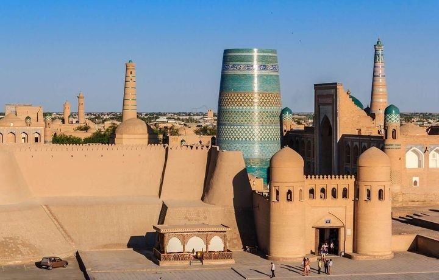Xiva shahrida 64 ta madrasa mavjud bo’lib, shular ichida eng yirigi va chiroylisi Xiva xoni Muhammad Aminxon tomonidan qurilgan madrasa hisoblanadi. Madrasa Ichan qal’aning g’arbiy qismida joylashgan bo’lib, shaharning bosh darvozasi Ota darvozadan kirib kelganda, o’ng tomonda joylashgan. Bu me’morchilik obidasi o’z davriga xos uslubda eng katta va hashamatli qilib qurilgan. Madrasa pishiq g’ishtdan qurilib, uning devorlarining qalinligi 1,5 metrga etadi. Madrasa 130 hujradan iborat. Derazalarda ganchdan ishlangan panjaralar qurilgan. Muhammad Aminxon minorasi: Xivada qurilgan mashhur minoralardan biri nihoyasiga etkazilmagan Muhammad Aminxon minorasidir.
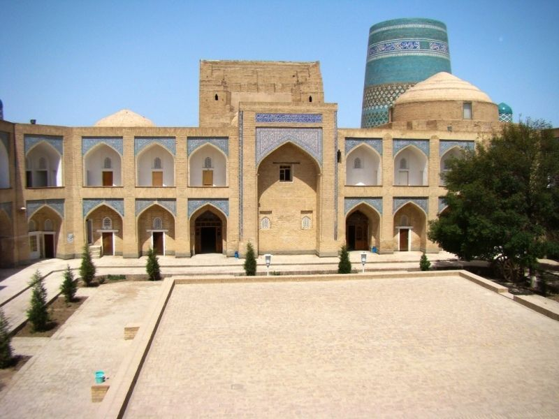Pahlavon Mahmud maqbarasi XIV asrda kichik go’rxona shaklida qurilgan bo’lib, unda o’z davrining katta “Piri” – Pahlavon Mahmud jasadi ko’milgan. Pahlavon Mahmud 1247 yilda Xiva shahrida po’stindo’z oilasida tug’ilgan. Yoshlik yillarda ota kasbi po’stindo’zlik bilan shug’ullangan, so’ngra xat-savod chiqarib, buyuk shoir, faylasuf darajasiga erishgan. U juda ham zabardast pahlavon bo’lib 79 yillik hayotida biron marta kuragi erga tegmagan. Pahlavon Mahmud maqbarasi vaqt o’tishi bilan ko’pgina xukmdorlar tomonidan aziz sanalib obod qilingan. Tarixiy manbalarda maqbaraga Amir Temur tomonidan eshik o’rnatilgani yoziladi. Maqbara 3 ta qismdan iborat: qabrxona, xonaqo va yo’lak. Maqbaraning g’arbiy qismida joylashgan xonaga Pahlavon Mahmud dafn qilingan.
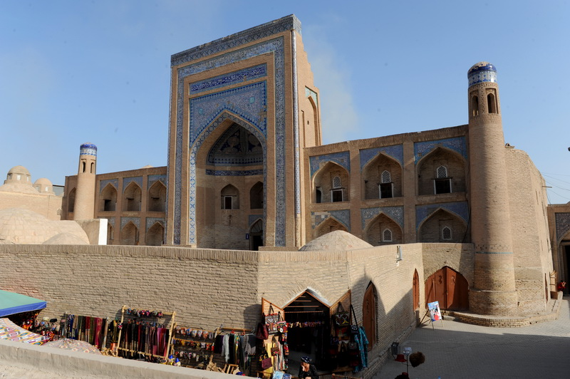Xivadagi Nurullaboy saroyi eng hashamatli, eng jozibali, eng ko’rkam va maftunkorligi bilan boshqa saroylardan ajralib turadi. Muhammad Rahimxon II (1864-1910) xivalik savdogar boy Nurullaboydan bog’ini sotishini so’raydi. Nurullaboy xonga, u avvaldan xalq o’rtasida bo’lib kelgan Nurullaboy bog’i nomini o’zgartirmasa sotishini aytadi. Xon rozilik bildiradi va bog’ni sotib oladi. Shunday qilib Nurullaboy nomi saqlanib qoladi. Muhammad Rahimxon II Nurullaboy bog’i ichida o’g’li Isfandiyorxon uchun katta bir saroy qurdiradi. Bu ichki saroy 1896-1904 yillarda qurilgan bo’lib, baland devor bilan o’rab olingan. Saroydagi Isfandiyor to’ra uchun mo’ljalangan xonalarga Rossiyadan keltirilgan chinni pechkalar o’rnatilgan. Shiftlardagi Evropa usulida yasalgan gullar va farishtalar rasmini rus rassomlari yasashgan.
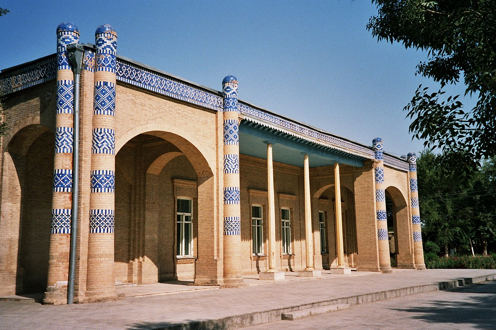“Sulaymon qal’a” qadimiy Xorazmning eng ko’hna qal’alaridan biridir. Tarixiy obida Xazorasp tumanida joylashgan. Xazoraspning tarixi eramizdan oldingi V asrga taalluqlidir, kal’a o’sha zamonlarda yashagan xukmdorlarning qarorgohi bo’lgan. Qal’a devorlari xozirgi kunga qadar saqlanib qolgan. Qal’a xavfsizligini ta’minlash maqsadida obida ko’l bilan o’ralgan. Mahalliy aholi bu ko’lni Oydin ko’l deb ataydi. Uning o’ziga xos jihati shundaki, ko’l chuchuk suv bilan to’yintiriladi. Tarixiy manbalarga ko’ra, ko’l ostida er osti yo’li joylashgan. Qal’aning eng yuqori tepaligidan astronomik kuzatuvlar uchun foydalanilgan.
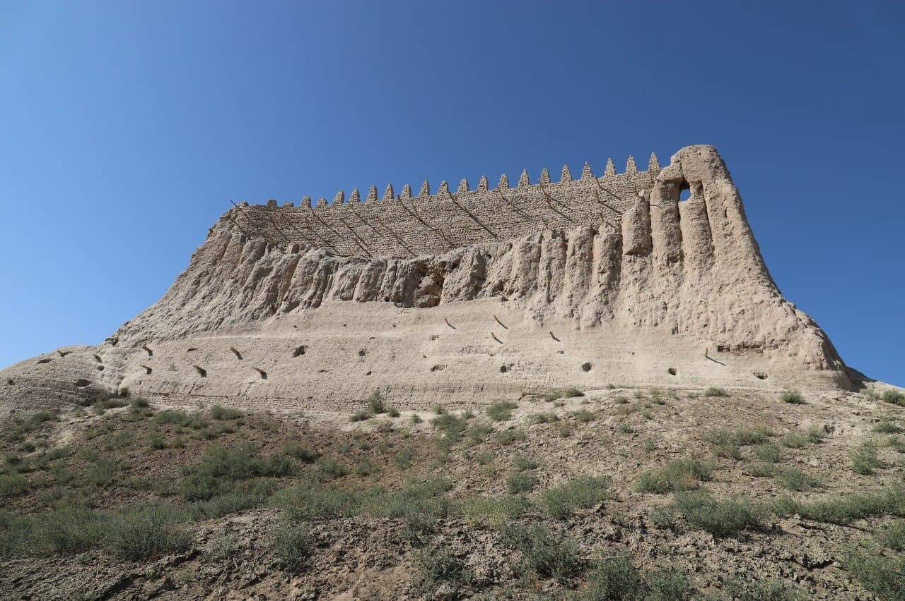Cho’girmai - Xorazmning milliy bosh kiyimi sanaladi. U qorako’l terisidan tayyorlanadi va qishda sovuqdan, yozda esa quyosh taftidan saqlashga xizmat qiladi. Cho’girmani asosan xon, vazir kabi badavlat kishilar kiyishgan. Cho’girma erkaklar bosh kiyimi bo’lgani uchun Xorazm vohasida u bilan bog’liq bir udum saqlangan. Unga ko’ra, uylanish niyatini bildirgan yigitga qiz tomon cho’girmani kuch bilan otishgan, agar yigit yiqilib tushsa, unga turmushga chiqishdan qaytishgan. Xorazmda cho’giramni yosh toifasiga qarab kiyishgan: keksalar oq, o’rta yoshlilar kulrang, yoshlar esa ranglilarini.
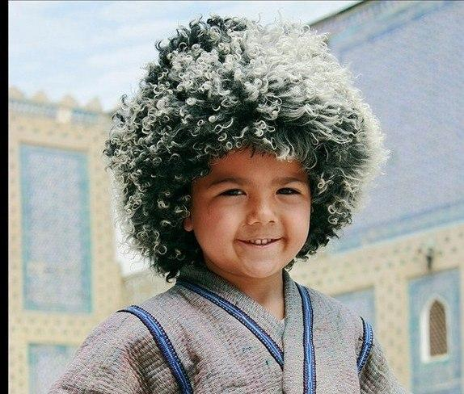Yumurta, ya’ni tuxum barak Xorazmning qadimiy taomidir. Mazkur taom parxez taom hisoblanib, inson organizmining xazm qilish organlari kasalliklarida juda foydali. Bu taom chuchvaraga o’xshab ketadi. Faqat xamir ichiga go’sht emas, balki tuxum,sut,yog’ aralashmasi solinadi. Shuningdek,shivit oshi ham Xorazmning o’ziga xos, sevib iste’mol qilinadigan milliy taomlaridan biri.Uni tayyorlash uchun suvga ko’kat qo’shib bir soatga tindirilib qo’yiladi. Ko’katni siqib,suvi olinib xamir qoriladi. Xamir kesib, qaynatib olinadi. Ustiga qayla tayyorlanadi va dasturxonga tortiladi.